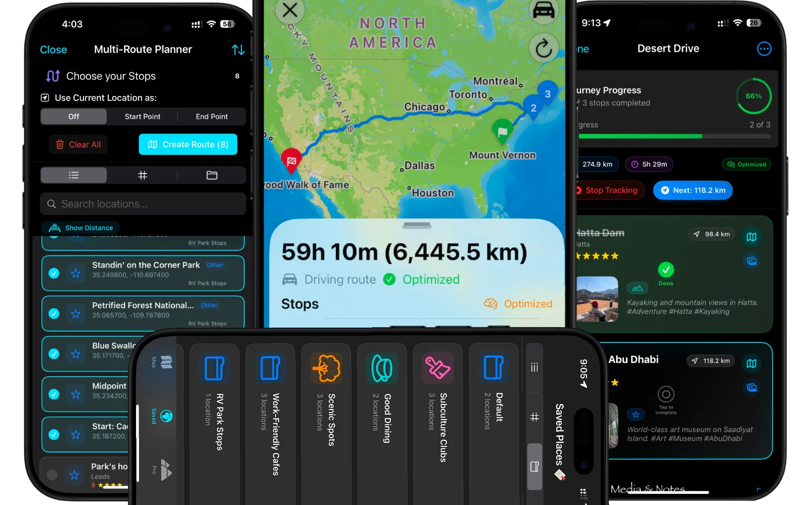

Maplet for iOS
Offline Map Marker & Route Planner for iOS
Save places, plan the routes, and use it without a signal.
Maplet is a map bookmark and GPS toolkit for travel, field work, and outdoor trips. Pin waypoints with notes and photos, optimize multi-stop routes, and keep every location on your device. No account required.
Free to download · No account · Works fully offline

Why Maplet
The complete toolkit for bookmarking, routing, and exploration.
Save detailed waypoints with media and notes, auto-optimize multi-stop routes, and navigate off-grid with Compass Target. Share entire interactive maps via private links, with zero account setup and all your data kept on your device.
-
Save & bookmark
Pin waypoints with notes, photos, and voice memos. Organize with folders and categories. Import GPX or KML, export CSV when you need a backup.
-
Multi-stop routes
Build routes for road trips, deliveries, or trails. Reorder stops, track progress, and open the result in Apple Maps, Google Maps, Waze, and more.
-
Compass & GPS
Compass Target tracks saved places, the Sun, Moon, Qibla, and your parked car. Arrival alerts fire when you get near a pin.
-
Private & offline
Works fully offline. Optional iCloud sync stays on your Apple ID. No ads, no account, and nothing lives on a Maplet server.
Route planner
Optimize multi-stop routes, then track the journey.
Pick pins from any folder and Maplet builds a driving or walking route between them. Auto-optimize the stop order, check places off as you go, and hand the route to the navigation app you already use.
- Multi-stop routes for road trips, deliveries, or trails
- Live distance, ETA, and journey progress tracking
- Open in Apple Maps, Google Maps, Waze, HERE, and more

Compass Target
Navigate by bearing when you lose signal.
Compass Target is a GPS bearing tracker for the places you saved, plus the Sun, Moon, Qibla, and your parked car. A compass overlay sits on the map, and arrival alerts fire when you enter a 500 m radius of a pin. No cell service required.
- Offline waypoint navigation by distance and bearing
- Live compass overlay on the map
- Arrival alerts even when the app is in the background


FAQ
Common questions
- What is the best offline route planner for iPhone?
- Maplet is an offline route planner for iOS. Save waypoints on your device, optimize multi-stop routes, and keep navigating when there’s no signal.
- How do I share a custom map on iPhone?
- Long-press a folder in Maplet and choose Share via Deep Link. The app encodes your pins into a maplet.net/share URL on your device. Anyone with the link gets an interactive map. No account, and nothing is uploaded to a server.
- Can I import GPX and KML files?
- Yes. Maplet imports GPX and KML files, plus CSV coordinate lists. You can export CSV coordinate data, PDF reports, or a full
.mapletarchive. - Does Maplet work without internet?
- Yes. Saved places, notes, coordinates, and Compass Target (the GPS bearing tracker) all work offline. iCloud sync is optional and the only feature that needs a connection.
Download Maplet for iPhone
Free to download. Your places stay on your device.
Download on the App Store